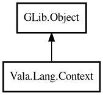

Context
Object Hierarchy:

Description:
public class Context : Object
Cancellation and timeout context propagated across call boundaries.
Context is inspired by Go's context package and is intended to pass cancellation signal, deadline, and request-scoped values.
Content:
Static methods:
- public static Context background ()
Returns root context that is never cancelled by parent.
- public static Context withCancel (Context parent)
Creates child context that can be cancelled explicitly.
- public static Context withDeadline (Context parent, DateTime deadline)
Creates child context with absolute deadline.
- public static Context withTimeout (Context parent, Duration timeout)
Creates child context cancelled on timeout.
Methods:
- public void cancel ()
Cancels this context.
- public ChannelInt done ()
Returns done notification channel.
- public string? error ()
Returns cancellation reason.
- public bool isCancelled ()
Returns whether this context is cancelled.
- public Duration? remaining ()
Returns remaining time until deadline.
- public string? value (string key)
Returns value for key from this context chain.
- public Context withValue (string key, string value)
Creates child context with additional key/value.
Inherited Members:
All known members inherited from class GLib.Object
- @get
- @new
- @ref
- @set
- add_toggle_ref
- add_weak_pointer
- bind_property
- connect
- constructed
- disconnect
- dispose
- dup_data
- dup_qdata
- force_floating
- freeze_notify
- get_class
- get_data
- get_property
- get_qdata
- get_type
- getv
- interface_find_property
- interface_install_property
- interface_list_properties
- is_floating
- new_valist
- new_with_properties
- newv
- notify
- notify_property
- ref_count
- ref_sink
- remove_toggle_ref
- remove_weak_pointer
- replace_data
- replace_qdata
- set_data
- set_data_full
- set_property
- set_qdata
- set_qdata_full
- set_valist
- setv
- steal_data
- steal_qdata
- thaw_notify
- unref
- watch_closure
- weak_ref
- weak_unref